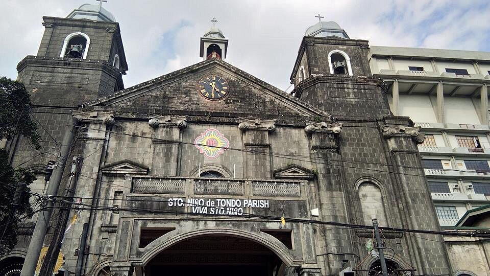
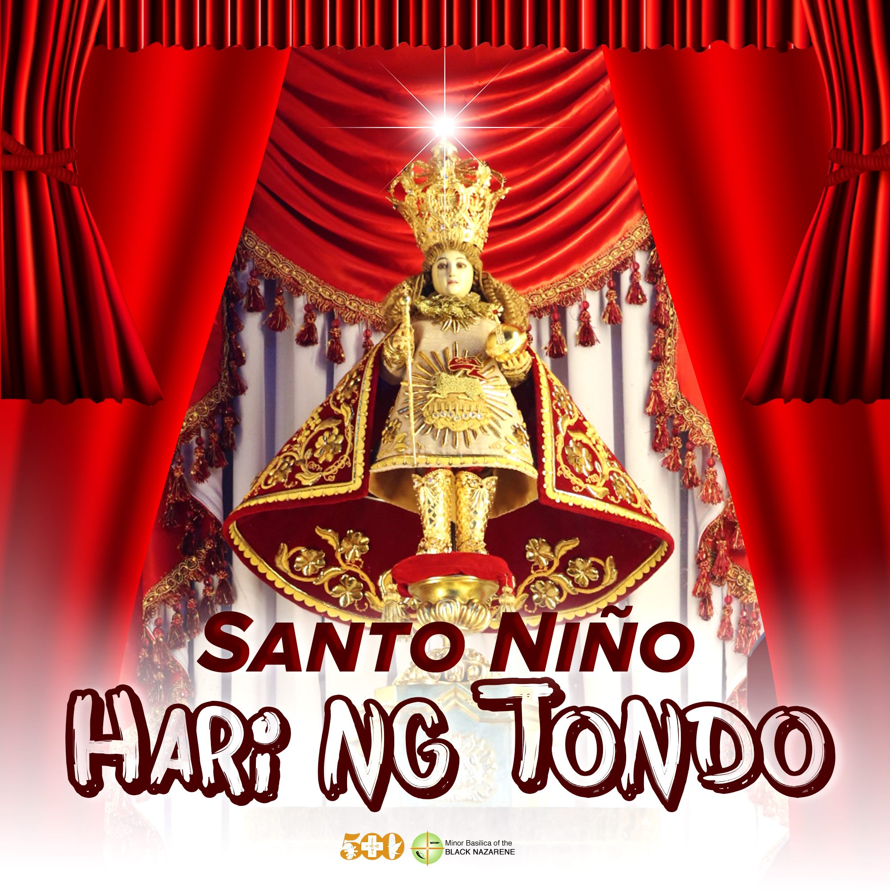

Aristotle Pollisco o mas kilala bilang Gloc-9. Kung madalas kang makinig sa radyo, manood sa telebisyon, at mahilig sa musika partikular na ang rap, sigurado'y pamilyar ka sa kanyang pangalan. Isa s'ya sa mga nanguna sa larangan ng Hip-Hop dito sa Pilipinas at nakilala na rin sa bansag na "King of Hip-Hop". Kinilala rin s'ya ng "King of Rap" ng ating bansa na si Francis Magalona bilang "panday ng mga salita't letra" at isang tunay na makata. Si Gloc-9 ang nasa likod ng mga sikat na kantang Bagsakan, Sirena, Simpleng Tao, Upuan, Lando, Magda, Hari ng Tondo, at marami pang iba.
Kadalasan, kapag sinabi nating rapper ang maiisip natin ay mabilis at 'di maintindihan. Ngunit ibahin n'yo si Gloc-9. Halos lahat sa kanyang mga kanta ay malinaw sa tainga kahit na anumang bilis. Mahilig ang aking ama makinig ng musika kaya marami kaming mga CD sa bahay. Isa sa sa mga CD na iyon ay ang album ni Gloc-9 na ang pamagat ay "MKNM: Mga Kwento Ng Makata". Halos araw-araw ata ay nakasalang sa aming CD player ang album n'ya kaya 'di ko rin maiwasang makinig at sumabay. Maliban sa liriko, nakibasa ko na rin ang ayos ng pagkakasunod-sunod ng mga kanta. Iyon na rin mismo ang unang engkwentro ko sa rap. Sa kanya ko napagtanto na pwede pa lang malinaw na maintindihan kahit na mabilis kang magsalita. Kapag nakikinig ka sa kanya mga kanta, para bang binabasahan ka lamang ng kwento ng iyong ina.Maliban sa bilis n'yang magsalita, nakilala rin s'ya dahil sa mga liriko ng kanyang mga kanta. Karamihan sa mga kanta n'ya'y tumatalakay sa pag-ibig, trapik, kahirapan, at iba pang isyu sa ating bansa.
Sa blog na ito, ating tatalakayin ang kanta n'yang isinulat noong 2021 na halaw sa tunay na buhay na ang pamagat ay "Hari ng Tondo". Atin itong susuriin kung ano nga ba ang kahulugan at kasaysayan sa likod nga bawat salita't letra sa pamamagitan ng unang kahulugan ng kasaysayan ayon kay Resil B. Mojares - kasalukuyang kamalayan o paraan ng pag-iisip. Aalamin din natin kung papaano nagmarka't nagtayo ng bantayog sa ating kasaysayan.
Ang Tondo ay isa sa mga ditrito sa Lungsod ng Maynila na kilala rin bilang Tundo, Tundun, Tundok, Lusung, Tung-lio, Imperyong Luzon, o Sinaunang Tondo. Noon pa man, ang bayan ng Tondo ay isa na sa mga sentro ng kalakalan ng Pilipinas dahil na rin sa heograpikal nitong katangian. Bilang malapit ito sa katawan ng tubig, isa ito sa mga kabihasnan sa Pilipinas na nabanggit sa Inskripsiyon sa Binatbat na Tanso ng Laguna noong taong 900 na tinawag bilang "Tundun".
Ngayon, ano ang nais ipahiwatig ng liriko ng kanta na "Gusto nang maghari sa Tondo?"
Noong panahon, tinatawag ng mga Tsino, Portuges at Kastila ang lugar na ito bilang "Kaharian ng Tondo". Ngunit kalauna'y ipanaliwanag din na mali ito sa isa sa mga unang diksyunaryong Tagalog na Vocabulario de la Lengua Tagala ni Pedro de San Buenaventura noong 1613.Bago pa man dumating ang mga mananakop na Espanyol sa Pilipinas, kilala na ang Tondo bilang isang "kaharian". Nasasakop ng kaharian na ito ang mula sa kasalukuyang Muelle de la Industria sa baybayin ng Ilog Pasig hanggang sa Bulacan at Pampanga. Ang kilala ngayong Manila Bay na nasa harap ng Tondo ay sinaunang daungan ng mga barko. Pinaniniwalaang mayaman ang kaharian na ito dahil na rin sa pakikipagkalakalan sa ibang mga bansa tulad ng Tsina, India, Malaysia at Brunei.
 Katibayan ang mga simbahan ng Tondo sa mga kasaysayang nagmula pa sa mga Kastila. Ang mismong pinagtitirikan ng Sto. Niño de Tondo Parish ay minsang tahanan ni Lakandula na kilala rin bilang "Ang Dakilang Raha ng Tondo". Noong panahon, pilak at ginto ang ginagamit sa pakikipagkalakalan. Kaya 'di maitatanggi ang yaman at kapangyarihan ni Lakandula. Siya lang ang may pribilehiyo ng hindi pagbabayad ng buwis at pagiging malaya sa paghahanap-buhay. Ngunit nang dumating si Miguel López de Legazpi, ang sugo ng Espanya upang sakupin ang Maynila noong Mayo 1571, natapos ang kanyang pamumuno. Noong nakita ni Lakandula ang hukbo ni Legazpi, hindi na niya naisipang lumaban. Samantalang nakipaglaban sa kabilang pampang ng Ilog Pasig ang kanyang kamag-anak na si Raha Sulayman sa grupo ni Martín de Goiti. Nasakop ng mga Espanyol ang Maynila at dito sila nagtatag ng kanilang headquarters na kalauna'y nakilala rin bilang Intramuros.
Ngayon, kapag naririnig natin ang lugar ng Tondo, malamang papasok agad sa ating isipin ay imahe ng mga kalyeng puno ng siga't tambay. Isa na sa mga dahilan ng takot na ito ay ang kinakausap ng unang liriko. Ipagpatuloy ang pagbabasa upang mas makilala pa s'ya.
Noong panahon (1950s), laganap ang karahasan sa Tondo. Bawat kalye ay puno ng mga tambay, siga, at gangster. Ang putok ng baril ay para bang huni na lamang ng ibon para sa kanila. Ang bawat sulok ng kanilang lugar ay puno ng takot. Ngunit wala namang makapagsalita't makaangal dahil buhay nila ang kapalit.
Carlos Capistrano o mas kilala sa alyas na Totoy Golem. Halaw ang ngalang ito mula sa alamat ng mga Hudyo kung saan nagkabuhay ang isang pigurang gawa sa luwad. Matangkad ito at may bato-bato na katawan, isa na rin sa dahilan ng kanyang alyas. S'ya ang nagpapaktbo ng mga ilegal na gawain sa Tondo. Ang kahit anong establisyementong kumikita ng pera ay kinikikilan nila. Bawat tindahan, bilyaran, sugalan, at iba pa'y laging nagbibigay ng hati ng kanilang kita sa grupo nila Capistrano. Sangkot din s'ya sa mga ilegal na pagmamay-ari't pagbebenta ng mga baril, pagpatay, at marami pang iba. 'Di nagdadalawang isip ang kanilang grupo na patayin ang sinumang tumaliwas sakanila.
Karamihan sa kanyang mga alagad ay minsan na ring nahuli at nakalaya rin kalaunan. Marami pang ibang taong na nakaranas ng parehong sitwasyon. Kahit man nasa likod sila ng mga malalamig na rehas, marami pa rin silang koneksyon sa labas. At marami ring mga kriminal pa ang malayang namumuhay sa bayan ng Tondo. Tila ba'y walang pinagkaiba ang laya sa pagkakakulong.
Ngunit naglakas loob pa rin ang isang sigang tambay at ang kanyang grupo. Dito umusbong ang isang alamat.
Sa gitna ng karahasan at kaguluhan, may nagtangkang sumalungat sa agos. Nicasio "Asiong" Rodriguez Salonga, kilala rin bilang "Hitler" o "Hito" ng Tondo. Tinuturing si Asiong bilang isang notorious na gangster na naghari sa "mob district" ng Maynila, ang Tondo. Mayroon siyang 12 tapat na tagasunod at 4 na kampo sa Maynila - Tondo, Binondo, Quiapo, at Pier. Nakaangkla ang pangalan n'ya sa iba't ibang kaso tulad ng ilegal na pagmamay-ari at pagbebenta ng mga baril, pagpatay, paninikil, at marami pang iba na lagi naman n'yang nalulusutan.
Ngunit kahit na ganito'y mataas ang tingin at respeto ng taong-bayan sa kanya. Hinahatian n'ya ng pera ang mga mahihirap mula sa kanyang nakukuha mula sa kanilang operasyon laban sa mga mayayaman. Tinuturin din s'ya bilang bayani at tinaguriang "Robin Hood" ng Tondo. 'Di n'ya alintana ang dami't pwersa ng kalaban dahil alam n'yang teritoryo niya ang kanyang tinatayuan. At sa kanyang teritoryo, walang makakaapi sa sinumang tao. S'ya ang binansagang "Hari ng Tondo".
Nagkaroon ng alitan sa pagitan ni Asiong at isa sa kanyang mga kaibigan na si Ernesto Reyes o kilala rin bilang Erning. Isang beses ay binugbog at ninakawan ng dalawang piso ni Erning ang anak ng tindera sa kanilang bayan. Para sa konteksto, ang dalawang piso noong 1950s ay makabibili pa ng pito hanggang walong softdrinks. Nang mapadaan sila Asiong at kanyang mga kasama sa tindahan, agad sinumbong ng tindera si Erning. Bilang kakampi ang turing ni Asiong sa mga nakatira sa kanilang teritoryo, binalaan n'ya si Erning na kung sakali man na maulit ito, sisiguraduhin n'yang may pagkalalagyan si Erning. Ang sitwasyon na ito'y pinagsamantalahan ni Totoy Golem. Nag-alok ito ng pera kay Erning upang pagtaksilan si Asiong.
Apat na araw bago ang kaarawan ni Asiong, matapos ang pinuntahang binyag ni Asiong ay nagkita sila ni Totoy Golem. Inaya ni totoy sa isang restawran si Asiong at pinakilala n'ya ang bago n'yang kakamping si Erning. Sa kaina'y idinaos ang samahan ni Asiong at Totoy Golem. Sumang-ayon dito si Asiong dahil ang tanging gusto n'ya lamang ay kapayapaan. Mahahati ang Tondo sa dalawang teritoryo sa pamamagitan ng tulay na kahoy. Ngunit bago pa man magkaroon ng maayos na usapan, binulungan ni Erning si Asiong, sabay bunot ng baril. 'Di nagdalawang isip si Erning kalabitin ang gatilyo matapos makakita ng pagkakataon.
 Sa kasalakuyang panahon, ginagamit na rin ang bansag ng "Hari ng Tondo" sa patron na Sto. Niño. Noong bisperas ng pista ng Lakbayaw Festival, ayon sa isang manunulat ng blog na nagngangalang christianxeres, may mga poster na may imahe ng Sto. Niño de Tondo na may kasamang sulat na "Ito ang Hari ng Tondo". Kabaligtaran sa karaniwang konotasyon ng bansag na "Hari ng Tondo" na kinatatakutan at iniilagan, nais ipahiwatig sa atin ng mga taga-Tondo na ito rin ay maaaring simbolo ng kababaang loob, kapayakan, kamusmusan, at kapayapaan sa presensya ng Sto. Niño, ang batang Hesus.
Nakakatuwang isipin ang kwento ni Asiong at ni Hesus ay pagkakapareha. Parehas silang may labindalawang alagad at ang isa sa kanila ay si Hudas. Parehong pinagkanulo ni Erning at Hudas ang kanilang mga hari sa kapalit ng salapi. Hinatulan ng kamatayan si Hesus matapos halikan ni Hudas. Gayundin si Asiong na pumanaw matapos bulungan ni Erning, tutukan ng baril, at tuluyang kalabitin ang gatilyo.
Sa kantang ito, malinaw na makikita ang kasaysayan ng Tondo. Mula sa mga taong-bayang kumakapit sa patalim para malamang mabuhay, hanggang sa haring may akalang ang taliwas kung minsan ay tama. Makikita rin ang takot ng bawat mamamayang pinipiling magtikom ng bibig sa gitna ng mga paninikil at pang-aabuso. Dahil kung hindi, buhay nila ang kapalit. Hanggang sa may sumalungat sa agos. Ang tunay na may kailangan ay kanyang pinatatamasa. Lahat ng kalaba'y natakot at 'di na muling nakaapak sa kanilang teritoryo. Sa kabila ng dahas at gulo, tanging pamilya't asawa na lamang ang naghahatid sa kanya sa katinuan. Ngunit noong oras na gusto n'ya na huminto, huli na ang lahat. Ipinasok ang tingga, kinalabit ang gatilyo, at tuluyang tumulo ang dugo sa mga pantalon.
Sa tulong ng galing ng manunulat na si Gloc-9, matagumpay na naipinta sa ating mga isipin ang mga pangyayari noong panahong iyon. Gamit ang sikat na kantang ito, tiyak na 'di kay daling mawawaglit ang Tondo sa ating memorya. Na tila ba'y bantayog na s'yang nagsisilbing marka sa ating kasaysayan.
“Gloc-9.” 2007. Wikipedia.org. November 27, 2007. https://tl.wikipedia.org/wiki/Gloc-9. “Bayan ng Tondo” 2010. Wikipedia.org. March 27, 2010 .https://tl.wikipedia.org/wiki/Bayan_ng_Tondo "Tondo, Maynila" 2009. Wikipedia.org. March 4, 2009. https://tl.wikipedia.org/wiki/Tondo,_Maynila "Asiong Salonga" 2022. Wikipedia.org. July 13, 2022. https://en.wikipedia.org/wiki/Asiong_Salonga “Hari Ng Tondo!!!” 2012. akosixe. January 22, 2012. https://christianxeressantos.wordpress.com/2012/01/23/hari-ng-tondo/. “Inflation Sa Pilipinas" 2018. Bradley, Zam. November 11, 2018. https://medium.com/@zambradley/inflation-sa-pilipinas-27f721e4b3f5. “I-Witness: ‘Kaharian Ng Tundo,’ 2018. GMA Public Affairs. YouTube. https://www.youtube.com/watch?v=ePqk9kVj3NY&ab_channel=GMAPublicAffairs.